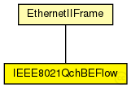

TODO generated message class
The following diagram shows usage relationships between types. Unresolved types are missing from the diagram. Click here to see the full picture.
The following diagram shows inheritance relationships for this type. Unresolved types are missing from the diagram. Click here to see the full picture.
| Name | Type | Description |
|---|---|---|
| EthernetIIFrame | packet |
Ethernet II headers contain a 16-bit ~EtherType to identify the encapsulated protocol. |
| Name | Type | Description |
|---|---|---|
| byteLength | ||
| etherType | int | |
| pcp | uint8_t |
表示报文优先级的，TT流仅使用前两个优先级 |
| de | bool |
或者结合PCP来指示在存在拥塞的情况下有资格丢弃的帧。 |
| VID | uint16_t |
VLAN标识符 |
| displayString | string |
设置message 颜色 |
| dest | MACAddress | |
| src | MACAddress |